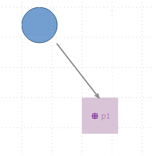

Summary: Connection between figures borders and edges
| Version | Status | Date | Authors | Changes |
|---|---|---|---|---|
| v0.1 | DRAFT | 2015-10-28 | smonnier | Initial version. |
Relevant tickets:
In a previous evolution, work was done to display the connection ends on SVG figures following their borders. This is working on styles Workspace Image, with a given SVG, and bundle image, as the image have been done in SVG. However, these SVG have some «special effects» on them to display some depth (shadow and strange gradient color). The goal of this evolution is to provide to specifiers a way that will allow them to define new shapes in the bundle image style.
In this evolution, we want to provide an extension point to specifiers that will allow them to define new shapes in the bundle image style. The provided image is expected to be a SVG file like the default shapes available in a bundle image style.
For bundle image using one of the default shape, Sirius looks into the SVG file and update some specific tags in order to set different parameters like the color. For instance, for a bundle image style using the default «dot» shape the used SVG has the following tag concerning the border color:
<stop
offset="0"
id="stop1"
style=«stop-color:#a9c3e4;stop-opacity:1» />
Sirius looks for a tag in the document with the id «stop1» and then the attribute «style», and change its value.
Concerning a new shape provided by the new extension, by default Sirius will look for the same tag identifiers and attributes. However, there will be an optional attribute in the extension point for each property to inform where to look for. These properties are color, border color and border size. As there is currently an issue where the border is drawn following the selection bounds (rectangle) instead of the figure bound, we also need a boolean property to inform if through this extension we want to apply the border size to the border of the figure or the selection bounds. This wrongly placed border can be currently used and need to be still usable as a side effect on default Bundle Image shapes. Therefore the issue Bugzilla 481025 should be solved only for the provided shape and be optional.
The default tags will be listed in the documentation.
The extension will obviously have a field to set the path of the SVG file to use. There will be a field to set the displayed label for the provided shape, in the Bundle Image style. By default, the label will be the file name without the extension. Adding a suffix with the plugin name that contribute the shape is probably a good idea when several plugins provide shapes.
If a provided shape is not found, the default «image not found» image will be displayed.
BundleImage has an attribute shape typed BundleImageShape. It is an enumeration containing the default shapes. We need a new attribute for provided shapes.
API Changes will be completed during implementation, it should concern the extension point providing new shapes.
On the specifier side, once the extension point is created, in the odesign, the Bundle Image style will provided the new shape after the default shapes.
On the end-user side, the only user interface change is that if the specifier update the odesign from a non-rectangular non-SVG style, for example Dot Style, to a bundle image style with a provided non-rectangular SVG image, the connection ends will be placed on the figure border.
Before

After